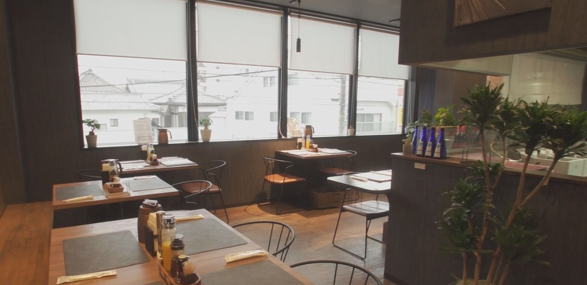
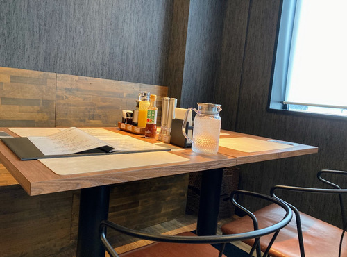
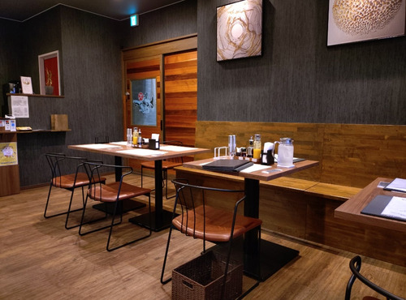
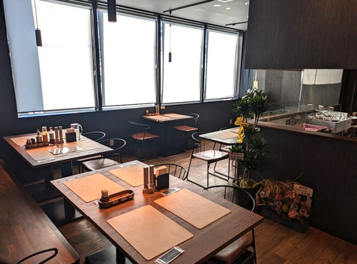
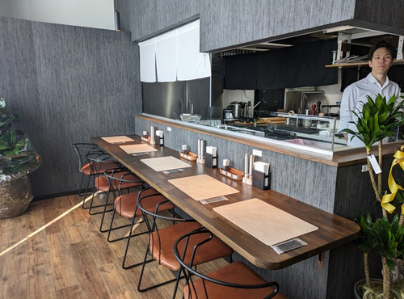
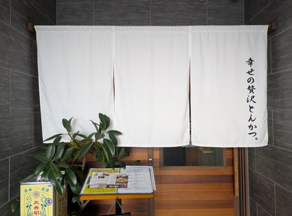

店舗情報
松阪駅西口から、
歩いて3分。
SUNRISEビルの2階。白い暖簾が目印です。カウンター4席、テーブル10席。全席禁煙です。





- 住所
- 三重県松阪市京町515-8 SUNRISEビル 2F
- 電話番号
- 0598-67-5615
- 営業時間
- 月〜金 11:30〜14:30（L.O.14:00）、18:00〜21:00（L.O.20:30）
土 11:30〜14:30（L.O.14:00）、17:30〜21:00（L.O.20:30）
日・祝 11:00〜14:30（L.O.14:00）、17:30〜21:00（L.O.20:30） - 定休日
- 最新の営業日は Instagram と Google でお知らせしています
- 席
- 14席（カウンター4席、テーブル10席）。全席禁煙
- 駐車場
- SUNRISEビル裏の専用駐車場 3台（No.4〜6）。近隣にコインパーキングがあります
- アクセス
- JR・近鉄 松阪駅西口から徒歩3分
- お支払い
- 現金のみ（カード・電子マネー・QRコード決済は使えません）